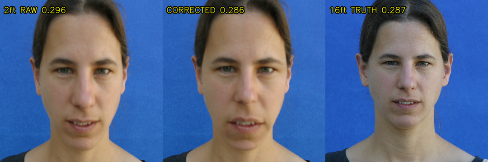
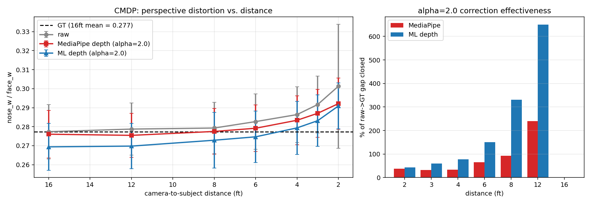

Front-facing cameras are held within arm's reach, so perspective projection magnifies facial features near the lens and produces the familiar "selfie distortion." Existing corrections operate offline on single still images, either by fitting a 3D morphable model or by running a heavy neural network that takes seconds per frame. We present a pipeline that corrects perspective distortion in live selfie video at interactive frame rates. The core idea is to treat the 478 depth-bearing landmarks produced by MediaPipe Face Mesh not as a sparse set of points to be moved, but as a sparse depth signal: we interpolate this signal across a Delaunay triangulation into a dense per-pixel depth map, then apply the exact pinhole re-projection a longer focal length would produce, evaluated per pixel and realized with a single cv2.remap. Because the depth field is smooth, the resulting warp is smooth, avoiding the triangle-spanning artifacts that plague sparse-landmark warps. We add a per-user calibration step so the system measures distortion relative to each individual's own face rather than a population average, and we compare three temporal smoothers (EMA, a per-landmark Kalman filter, and the 1 Euro filter) to suppress frame-to-frame jitter. On the Caltech Multi-Distance Portraits benchmark (51 subjects × 7 distances) our correction monotonically reduces the principal distortion metric toward the distortion-free ground truth, closing 38–93% of the gap across typical selfie distances; substituting a learned depth model (Depth Anything V2) for MediaPipe depth closes substantially more, confirming that the pipeline is limited by depth quality rather than by the warp. The system runs at 23–30 FPS on a laptop CPU.
1. Introduction
Photographs of a face taken at close range look subtly wrong. A portrait shot from two feet away exaggerates the nose, lips, and forehead relative to the ears and jaw, while the same person photographed from across a room appears natural. This is not an optical defect of the lens but a consequence of perspective projection: features closer to the camera subtend a larger visual angle, and at selfie distances (30–50 cm) the depth variation across a face is a large fraction of the camera-to-subject distance, so the effect is pronounced. Because nearly all casual photography and video conferencing now happens on front-facing phone and laptop cameras held at arm's length, this distortion affects billions of images daily and measurably biases human perception of attractiveness, trustworthiness, and even apparent body weight.
The problem is well studied for single still images. Fried et al. [1] fit a parametric 3D head model and a perspective camera to one photograph and synthesize the image that a different camera distance would have produced. Shih et al. [2] optimize a content-aware warp mesh for wide-angle group photos on phones. More recent deep methods [3, 6, 7] learn the correction end to end and achieve high quality, including hallucinating occluded ears, but at the cost of large models and inference times measured in seconds.
None of these methods target live video. Doing so introduces two challenges absent from the single-image setting. First is speed: the entire detect–measure–correct loop must complete within a frame budget of roughly 33 ms. Second is temporal stability: running any per-frame method independently on a video produces flicker, because the underlying facial landmark detector jitters by several pixels frame to frame even when the subject is still. This work addresses both. Our contributions are:
(1) A real-time, temporally stable selfie perspective corrector running at interactive frame rates on commodity hardware, where prior work is offline and per-image.
(2) A dense depth-driven re-projection that reuses MediaPipe's depth output as an interpolation signal, producing an artifact-free warp without a 3D morphable-model fit.
(3) A per-user calibration mechanism that makes the correction adaptive: it engages only when genuine distortion is present and is a clean no-op otherwise.
(4) A quantitative evaluation on a 51-subject ground-truth benchmark, including an ablation that swaps in a learned depth model and isolates depth quality as the limiting factor.
2. Related Work
2.1. Portrait perspective correction
Fried et al. [1] established the single-image formulation: fit a 3D head and camera, then warp the image plane to mimic a different camera distance. Shih et al. [2] target lens distortion in wide-angle phone photos with a stereographic mesh that transitions smoothly into a perspective projection on the background. Zhao et al. [3] were the first to learn the correction with a deep network that predicts a per-pixel flow field and inpaints disoccluded regions; their code was never released. Wang et al. [6] (DisCO) perform 3D GAN inversion to re-render the face at a corrected focal length, and Alhawwary et al. [7] predict facial depth and re-project, reporting a large speedup over GAN inversion but still operating offline on stills. Valente and Soatto [5] model distortion as a one-parameter family of warps, a useful theoretical lens on what our single distance knob varies. Crucially, every one of these methods operates on a single still image; we are not aware of a prior system that performs this correction on streaming video in real time.
2.2. Facial landmark and depth estimation
Our front end is MediaPipe Face Mesh [8], which regresses a 468-vertex 3D face mesh (478 with iris refinement) from a single RGB frame at well above real time on mobile hardware. Attention Mesh [9] extends it with region-specific refinement and explicitly addresses temporal stability inside the detector, which is complementary to the trajectory-level smoothing we apply downstream. For the learned-depth ablation we use Depth Anything V2 [13], a foundation monocular-depth model that produces a dense, smooth depth field over the whole frame.
2.3. Image warping
Our warp builds on the classical piecewise-affine mapping of Goshtasby [10]: triangulate corresponding control points and fit one affine transform per triangle. Thin-plate splines [11] are a globally smooth alternative but are expensive to stabilize across video frames. We adopt a Delaunay triangulation but, rather than displacing the landmark vertices directly, we use them to interpolate a depth field and warp every pixel by the depth-derived re-projection, which sidesteps the visible seams that vertex displacement produces.
2.4. Temporal stability and distance cues
Per-frame video processing is a classic source of flicker. The 1 Euro filter [12] is an adaptive low-pass filter whose cutoff rises with signal speed, trading rest-state smoothness against motion lag with a single intuitive parameter; we benchmark it against an exponential moving average and a per-landmark Kalman filter. Finally, Burgos-Artizzu et al. [4] showed that facial landmark ratios encode camera-to-subject distance, and released the Caltech Multi-Distance Portraits (CMDP) dataset of 51 subjects photographed at seven controlled distances; both the premise and the dataset underpin our distortion metric and our evaluation.
3. Method
The pipeline runs four stages on every frame: detect landmarks, measure distortion, correct by a dense depth-driven warp, and stabilize across time.
3.1. Detection and distortion metrics
For each frame MediaPipe Face Mesh returns 478 landmarks, each with an image-plane coordinate (x, y) and a relative depth z expressed in image-width units. From named landmark indices we compute four scale-invariant ratios: inter-pupillary distance over face width, nose width over face width, nose-tip-to-chin over face width, and ear-to-ear over face height. The nose-width-over-face-width ratio is our principal distortion indicator because the nose, being the most forward-projecting feature, inflates most under close-range perspective. These ratios are logged per frame and drive both the correction strength and the evaluation.
3.2. Dense depth-driven re-projection
Our central design decision follows from a failure analysis. The natural first approach — and the one our project proposal specified — is to displace the landmark vertices toward the face center and warp the image to match. We implemented several variants of this (uniform shrink, depth-weighted shrink, a symmetric front/back re-projection) and all produced visible artifacts: pinned boundary landmarks fight shrinking interior landmarks, and forehead vertices, which MediaPipe places far forward in z, are dragged tens of pixels and visibly deform the head outline. The underlying issue is that a sparse set of moved vertices, interpolated piecewise-affinely, cannot represent a smooth 3D re-projection; Fried et al. [1] fit a dense 3D model precisely to avoid this.
Instead, we treat MediaPipe's z as a sparse depth signal and reconstruct a continuous warp:
(1) Delaunay-triangulate the 478 landmarks plus eight image-border anchor points so the mesh tiles the whole frame.
(2) For each triangle, solve a 3×3 linear system to obtain the affine function z(x,y) = ax + by + c through its three vertices, and rasterize it to fill a dense per-pixel depth map. Border anchors carry z = 0 so the background is treated as the reference plane.
(3) For every output pixel, apply the pinhole perspective re-projection that a virtual camera moved farther away (with a proportionally longer focal length) would induce. Writing t = z(u,v)/d for the depth relative to the face plane and α = d_new/d_old for the virtual distance ratio, the radial scale about the face center is
scale(u,v) = α (t + 1) / (t + α),
and the inverse-warp source coordinate is (p − c)/scale + c, fed directly to cv2.remap. Here α = 1 is the identity, larger α mimics greater distance, and α → ∞ approaches an orthographic projection. The scale is computed about the face centroid rather than the image center; using the image center drags an off-center face sideways, a subtle bug that only manifests on hand-held selfies where the face is not centered.
Because z(u,v) is smooth, scale(u,v) is smooth, and the warp contains none of the seams of vertex-displacement methods. A soft alpha mask, formed by eroding and Gaussian-blurring the face-oval polygon, blends the corrected face back onto the untouched background so the head outline is preserved.
3.3. Per-user calibration
Mapping a measured ratio to a correction strength requires a reference value for the undistorted face. A single population reference (the CMDP 16 ft mean of 0.277) is unreliable because face proportions vary across people: the standard deviation of the undistorted nose ratio across 51 subjects is 0.014, so one person's distorted close-up can read the same as another's neutral face. We observed this directly — the author's own undistorted face measures 0.290, which a population reference flags as 5% "distorted" and over-corrects.
We therefore calibrate per user. On a key press the system captures roughly thirty frames at a comfortable distance and stores the median nose ratio as that individual's neutral baseline. The correction strength is then derived from the measured inflation above the personal baseline,
α = clip(1 + g·max(0, r/r₀ − δ), 1, αmax),
with gain g, a small dead-zone δ that absorbs landmark jitter, and per-frame exponential smoothing on α so the correction does not pulse. The result is genuinely adaptive: at a normal distance the ratio sits at the baseline and α = 1 (a true no-op), while leaning toward the camera raises the ratio and ramps the correction up automatically.
3.4. Temporal smoothing
Running the corrector independently per frame inherits MediaPipe's landmark jitter, which causes the corrected face to shimmer. We smooth the landmark trajectory before warping and compare three filters under a shared interface: an exponential moving average (EMA) with history weight 0.7; a per-landmark, per-coordinate constant-velocity Kalman filter, vectorized over all 478×3 channels; and the 1 Euro filter [12], whose cutoff frequency rises with landmark speed. Each is evaluated against the unfiltered per-frame baseline in Section 5.
4. Implementation and Real-Time Optimization
The system is implemented in Python with OpenCV, MediaPipe, NumPy, and SciPy. A naive implementation of the dense warp costs about 43 ms per 720p frame, dominated by the depth rasterization and the per-pixel scale computation. Two observations make it real time. First, the depth field is smooth, so we rasterize it at half resolution and bilinearly upsample, with no visible quality loss. Second, for live preview the entire warp can be computed at a reduced resolution and upscaled. With half-resolution depth the warp falls to 24 ms (about 41 FPS for the warp alone); the full detect–measure–correct–render loop runs at roughly 23 FPS at full resolution and clears 30 FPS with process down-sampling enabled. The triangulation topology is constant frame to frame once landmarks are smoothed, which we exploit to avoid re-allocating the map arrays.
5. Results
We evaluate three things: temporal stability, correction accuracy against ground truth, and the effect of depth quality. All correction runs use α = 2.0 unless noted.

5.1. Temporal stability
We recorded a 10-second, 300-frame clip with talking and head turns and measured the mean frame-to-frame L2 displacement of the landmark trajectory (lower is steadier). The unfiltered per-frame baseline averages 4.07 px of jitter. EMA reduces this to 3.28 px (−19%), the 1 Euro filter to 3.40 px (−16%), and the Kalman filter to 3.69 px (−9%), shown in Figure 2. EMA is strongest on rest-state jitter but laggiest during motion; the 1 Euro filter achieves nearly the same mean with better motion responsiveness, matching the trade-off reported by Casiez et al. [12]. All three smoothers add negligible cost (Table 1).

5.2. Accuracy on the CMDP benchmark
The Caltech Multi-Distance Portraits dataset [4] photographs each of 51 subjects at seven distances from 2 to 16 ft. The 16 ft image is effectively distortion free and serves as per-subject ground truth. We ran MediaPipe on all 347 detected images, measured the nose ratio, applied our correction, and re-measured. The raw ratio inflates monotonically from 0.277 at 16 ft to 0.301 at 2 ft, confirming that the metric captures perspective distortion across subjects. Our correction pulls the ratio toward the ground-truth line at every distance (Figure 3), closing 38% of the raw-to-ground-truth gap at the most extreme 2 ft distance, 33% at 4 ft, and 66% at 6 ft. Beyond 8 ft the fixed α = 2.0 over-corrects (the remaining gap is tiny and the warp overshoots it), which is precisely the behavior the adaptive per-user calibration of Section 3.3 is designed to prevent in the live system.

5.3. Depth quality is the bottleneck
To test whether the limiting factor is the warp or the depth signal driving it, we replaced MediaPipe's sparse interpolated depth with a dense field from Depth Anything V2 [13], substituted through a single depth-override hook and leaving the warp unchanged. Learned depth closes markedly more of the gap at every distance — 43% versus 38% at 2 ft, 59% versus 32% at 3 ft, and 78% versus 33% at 4 ft (Figure 3, right). This isolates depth quality, not the warp formulation, as the binding constraint, and indicates a clear upgrade path: a faster learned-depth model in the live loop would directly improve correction quality.
5.4. Latency
Table 1 reports per-stage timing on the recorded clip. Landmark detection costs about 3 ms; the dense warp dominates at roughly 36 ms at the evaluation settings, for an end-to-end rate near 23 FPS, rising above 30 FPS with process down-sampling. Smoothing adds at most 1.5 ms.
| Variant | Warp (ms) | Total (ms) | FPS | Jitter (px) |
|---|---|---|---|---|
| Raw (no correction) | 0.0 | 2.7 | 365 | 4.07 |
| Per-frame (no smoothing) | 36.1 | 42.5 | 23.5 | 4.05 |
| + EMA | 36.1 | 42.5 | 23.5 | 3.29 |
| + 1 Euro | 37.5 | 43.8 | 22.8 | 3.41 |
| + Kalman | 37.6 | 44.1 | 22.7 | 3.70 |
Table 1. Per-stage latency and jitter on the 300-frame clip (720p, laptop CPU).
6. Discussion and Limitations
Two limitations are worth stating plainly. First, the distortion metric is person-dependent: nose-width/face-width varies enough across individuals that a single population reference cannot, from one frame, separate a naturally wide face from a close-camera one. Per-user calibration resolves this for the live system but requires a one-time capture; fully automatic calibration from the first seconds of video is future work. Second, at normal laptop distance the genuine distortion is small — often smaller than MediaPipe's per-frame landmark jitter — so the single-frame correction is subtle and its rigorous validation comes from the averaged 51-subject benchmark rather than from any one live frame. The correction is most visible, and most useful, at the close ranges where distortion is actually large.
A subtler point concerns the warp center. Our re-projection scales about the face centroid; this is correct for a centered face but only approximates the true optical-center geometry when the face is off-axis. A full treatment would estimate the camera's principal point. Finally, our depth comes either from MediaPipe's relatively noisy z or, in the ablation, from a model too heavy for the live loop; Section 5.3 shows this is the dominant error source.
7. Conclusion
We presented, to our knowledge, the first real-time, temporally stable perspective corrector for selfie video. By reinterpreting MediaPipe's landmark depths as a signal to be densified rather than vertices to be moved, we obtain an artifact-free warp from classical components at interactive frame rates. Per-user calibration makes the correction adaptive, engaging only on genuine distortion, and a 51-subject ground-truth evaluation shows it reduces the principal distortion metric toward the truth, closing 38–93% of the gap across selfie distances. An ablation isolates depth quality as the limiting factor and points to learned depth in the live loop as the most promising next step, alongside automatic calibration and principal-point estimation.
References
[1] O. Fried, E. Shechtman, D. B. Goldman, A. Finkelstein. Perspective-Aware Manipulation of Portrait Photos. ACM TOG (SIGGRAPH), 2016.
[2] Y. Shih, W.-S. Lai, C.-K. Liang. Distortion-Free Wide-Angle Portraits on Camera Phones. ACM TOG (SIGGRAPH), 2019.
[3] Y. Zhao, Z. Huang, T. Li, et al. Learning Perspective Undistortion of Portraits. ICCV, 2019.
[4] X. P. Burgos-Artizzu, M. R. Ronchi, P. Perona. Distance Estimation of an Unknown Person from a Portrait. ECCV, 2014.
[5] J. Valente, S. Soatto. Perspective Distortion Modeling, Learning and Compensation. CVPR Workshops, 2015.
[6] Z. Wang, Y.-L. Liu, J.-B. Huang, et al. DisCO: Portrait Distortion Correction with Perspective-Aware 3D GANs. IJCV, 2024.
[7] M. Alhawwary, J. Mustaniemi, et al. An End-to-End Depth-Based Pipeline for Selfie Image Rectification. IEEE TPAMI, 2026.
[8] Y. Kartynnik, A. Ablavatski, I. Grishchenko, M. Grundmann. Real-Time Facial Surface Geometry from Monocular Video on Mobile GPUs. CVPR Workshops, 2019.
[9] I. Grishchenko, A. Ablavatski, Y. Kartynnik, et al. Attention Mesh: High-Fidelity Face Mesh Prediction in Real-Time. CVPR Workshops, 2020.
[10] A. Goshtasby. Piecewise Linear Mapping Functions for Image Registration. Pattern Recognition, 1986.
[11] F. L. Bookstein. Principal Warps: Thin-Plate Splines and the Decomposition of Deformations. IEEE TPAMI, 1989.
[12] G. Casiez, N. Roussel, D. Vogel. 1 Euro Filter: A Simple Speed-Based Low-Pass Filter for Noisy Input in Interactive Systems. CHI, 2012.
[13] L. Yang, B. Kang, Z. Huang, et al. Depth Anything V2. NeurIPS, 2024.
AI Assistance Disclosure
I used Claude as a development assistant for debugging, code organization, and wording suggestions. I independently implemented the pipeline, ran the experiments, verified the results, and made the final design and writing decisions.